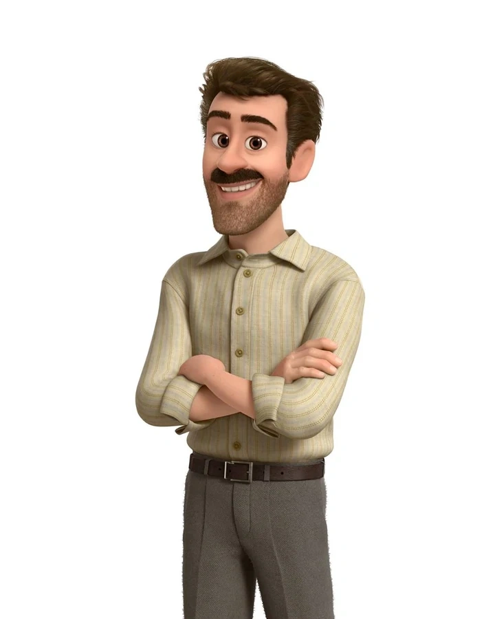
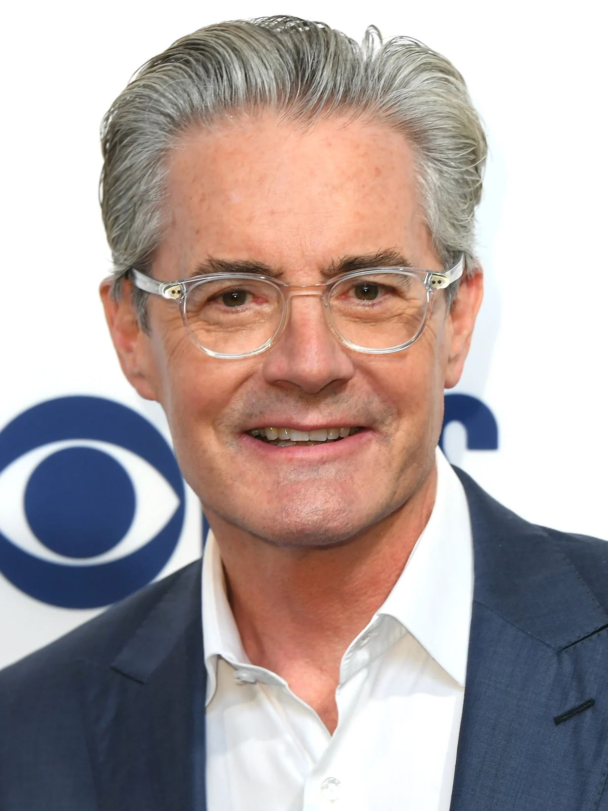

Kaitlyn Dias nasceu em 11 de maio de 1999 em El Dorado Hills, Califórnia, EUA. Ela é uma atriz, conhecida por Inside Out (2015), A Very Special Episode (2020) e American Crime (2015).
Nascimento: 11 de maio de 1999 (idade 24 anos), Norte da Califórnia, Califórnia, EUA
Altura: 1,6 m
Diane Lane dubladora da: Mrs.Andersen
Diane Colleen Lane é uma atriz norte-americana. Foi casada com Christopher Lambert, com quem tem uma filha, Eleanor. Em 2004, casou-se com Josh Brolin, separando-se em 2013. É filha da cantora Colleen Farrington.
Nascimento: 22 de janeiro de 1965 (idade 58 anos), Nova Iorque, Nova York, EUA
Cônjuge: Josh Brolin (de 2004 a 2013), Christopher Lambert (de 1988 a 1994)
Altura: 1,7 m
Filhas: Eleanor Lambert
Pais: Colleen Farrington, Burton Eugene Lane
Kyle MacLachlan dublador do: Mr.Andersen


Kyle Merritt MacLachlan é um ator americano. MacLachlan foi trazido para o cinema por David Lynch como Paul Atreides no filme Duna, de 1984. Estrelou a série Twin Peaks, fenômeno cult dos anos 1990, como o agente Dale Cooper.
Nascimento: 22 de fevereiro de 1959 (idade 64 anos), Yakima, Washington, EUA
Cônjuge: Desiree Gruber (desde 2002)
Altura: 1,83 m
Pais: Catherine MacLachlan, Kent McLachlan
Irmãos: Craig MacLachlan, Kent MacLachlan
Nome completo: Kyle Merritt MacLachlan
Richard Kind dublador do: Bing Bong
Richard J. Kind é um ator de filmes e teatro americano. Também trabalha como dublador de animações e comerciais para televisão. Mais conhecido pelo seu trabalho em séries de televisão, principalmente no papel do Dr. Mark Devanow em Mad About You.
Nascimento: 22 de novembro de 1956 (idade 66 anos), Trenton, Nova Jersey, EUA
Cônjuge: Dana Stanley (desde 1999)
Pais: Samuel Kind, Alice Kind
Filhos: Max Kind, Skyler Kind, Samantha Kind
Irmãos: Jonathan Rubin, Joanne Kind
Amy Poehler dubladora da: Alegria
Amy Meredith Poehler é uma atriz, comediante, produtora e roteirista norte-americana. Amy iniciou a sua carreira no teatro de improvisação em Chicago e, mais tarde, em Nova Iorque. Foi uma das fundadoras do grupo de teatro Upright Citizens Brigade
Nascimento: 16 de setembro de 1971 (idade 51 anos), Newton, Massachusetts, EUA
Cônjuge: Will Arnett (de 2003 a 2016)
Irmãos: Greg Poehler
Altura: 1,57 m
Pais: Eileen Poehler, William Poehler
Phyllis Smith dubladora da: Tristeza
Phyllis Smith é uma atriz americana, mais conhecida por interpretar a personagem Phyllis Lapin-Vance na série da NBC The Office.
Nascimento: 10 de julho de 1951 (idade 71 anos), San Luis, Missouri, EUA
Indicações: Prêmio do Sindicato dos Atores: Melhor Elenco de Série de Comédia
Pais: Glenda Smith
William Thomas dublador do: Medo
William Thomas "Bill" Hader Jr. é um ator, escritor, comediante e produtor norte-americano. Fez parte do elenco de Saturday Night Live até 2013 e é protagonista na série Barry, da HBO.
Nascimento: 7 de junho de 1978 (idade 44 anos), Tulsa, Oklahoma, EUA
Altura: 1,85 m
Cônjuge: Maggie Carey (de 2006 a 2018)
Irmãs: Kara Hader, Katie Hader
Pais: William Thomas Hader, Sherri Hader
Mindy Kaling dubladora da: Nojinho
Mindy Kaling, nome artístico de Vera Mindy Chokalingam é uma atriz, comediante, roteirista e produtora americana. Mindy é mais conhecida por interpretar a personagem Kelly Kapoor na série da NBC The Office, na qual foi também coprodutora executiva e roteirista de diversos episódios.
Nascimento: 24 de junho de 1979 (idade 43 anos), Waltham, Massachusetts, EUA
Altura: 1,63 m
Pais: Avu Chokalingam, Swati Roysircar
Prêmios: Prêmio do Sindicato dos Atores: Melhor Elenco de Série de Comédia
Irmãos: Vijay Chokalingam
Lewis Black dublador do: Raiva
Lewis Niles Black é um comediante de stand-up, autor, dramaturgo, critico social e ator americano. Ele ficou reconhecido por seu estilo agressivo de comédia, que muitas vezes inclui simulação de um colapso mental, ridicularização da história, crítica política, religião, tendências e fenômenos culturais.
Nascimento: 30 de agosto de 1948 (idade 74 anos), Washington, D.C., EUA